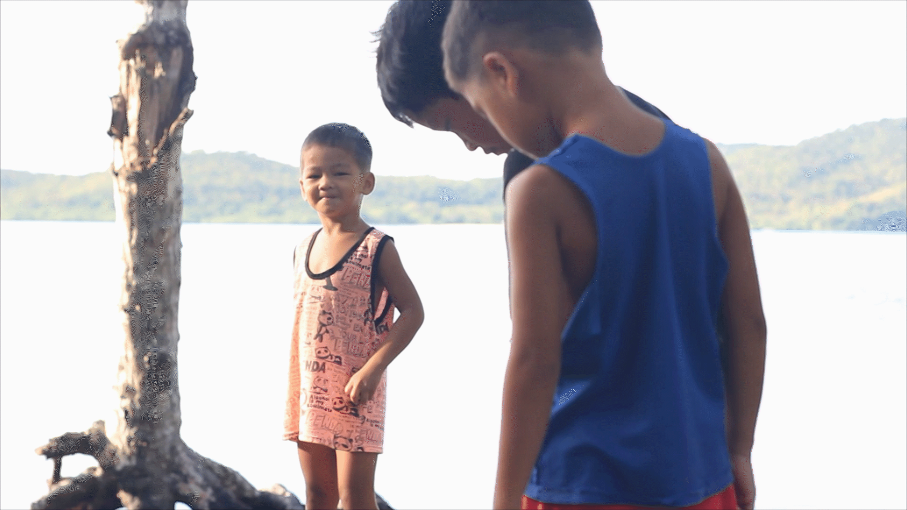

”Vi plejer at sige til de folk der er dernede, at hvis det har været en god oplevelse så gør noget igen for de lokale. Det ser vi som en win-win”
– Thomas Munk, Co-Founder

I 2013, sejler en 5-6 stykker rundt i Filippinerne på båden Amazing, med Kim som kaptajn. Kim er en eventyrlysten mand, som har sejlet rundt i de farvande siden 2008, med de diverse gæster ombord. Dog var dette år en noget anderledes oplevelse, da en af de værste tyfoner i filippinsk historie raserede øerne.
Heldigvis lagde Kim og hans gæster i læ, og undgik derfor den voldsomme storm. De fortsatter væk, og ud blandt Filippinernes 7200 øer. Set i perspektiv, vil det tage 20 år at besøge dem alle, hvis man besøger en enkelt om dagen.
Efter stormen havde lagt sig, stod det hurtigt klart, at den havde været altødelæggende, og Kim startede derfor en fundraiser via facebook, og da han allerede sejlede rundt i området på sin sejlbåd, begyndte han og de medrejsende at hjælpe til hvor de kunne.
Det vigtige ved nødhjælpen var ikke at give dem penge, men i stedet byggematerialer, til f.eks. bygning af nye både til fiskeri. Som ordsproget lyder: ”giv ikke en mand 10 fisk. Giv ham en fiskestang og lær ham at fiske.” Det var mere bæredygtigt og langsigtet at hjælpe med genopbygning.
"Det var en forholdsvis lille ting vi gjorde, men det betød alverden for dem."
Efter katastrofen var regeringen god til at hjælpe de større øer, men på de små kan man stadig i dag, 5 år senere, tydeligt se sporene efter katastrofen.
Efter 14 dage kommer Kim og de rejsende atter tilbage, denne gang med ris, mel og flere byggematerialer. De lokale indbyggere er så taknemmelige, og vil gerne gøre noget for Kim og gruppen, som tak. Til det foreslår Kim at de kunne hjælpe ham med at bygge et hus, for derved at kunne ansætte nogle af dem.
I starten virker det som en skør idé, men efter at Kim kom i kontakt med en anden dansk mand, som ejede et resort i nærheden, virkede det ikke så dumt længere. De følgende 10 måneder blev der derfor ansat 10 lokale, som ved at hjælpe med byggeriet kunne tjene til at forsørge deres familier.
Halvandet år efter tyfonens ødelæggelser i oktober 2013, sætter de første gæster deres fødder på Popototan og overnatter i Island House.
Rimar er go-to Guy ved Island House. Wendy er Rimars kæreste og mor til fire dejlige unger. Det er Wendys mor, som ejer grunden, og Wendy samt hendes to søskende, Gelle og Lean, er vokset op her. Wendy er en haj i et køkken, det er derfor hende der vil stå for måltider i huset. Wendy kan hjælpe med tøjvask, indkøb og kontakt til lokalsamfundet
Grunden til de 4 børn nævnes, er at det er en meget familiær oplevelse af at være der. Familien bor 300 meter fra huset, og deres børn kommer ofte ned i huset og hjælper til, eller leger med gæsterne. Der er så meget kærlighed i den familie og det er fantastisk at man som gæst ved Island House kan mærke det når man ankommer.



Mange har allerede oplevet hvad Amazing Philippines har at byde på. Blandt andet er der Pi på 20, der i sit sabbatår besøgte Secret Island. Hendes interesse for kitesurfing og vandsport tiltrak hende til stedet, som netop har gode muligheder for vind til netop dette, i nogle flotte og fantastiske omgivelser.
“Secret island er perfekt til kitesurfing”
Mens de var ude i vandet var der også rig mulighed for at se naturen, og blandt andet beskriver hun, at de oplevede at se havskildpadder og hajer, mens de var ude at surfe.
Udover at lære at surfe handlede turen også om at opleve det sociale fællesskab dernede, hvilket der var rig mulighed for, da man bor på øen med en lille gruppe af andre mennesker, som man skaber et unikt sammenhold med. I og med at der ikke er så meget stress på og bare skal lære hinanden at kende og så i det hele taget bare hygge sig.
Hun fik også mulighed for at opleve en masse andet mens hun var der nede. Blandt andet en anden slags kultur, igennem kontakten med de lokale fra de nærliggende øer. Som hun siger: “så kommer de over og måske har noget picnic eller kommer over og spiller volleyball med os” og på den måde lever man lidt side om side med hinanden.
Det er en anden kultur de lokale har og noget som Pi vil tage med sig fra denne tur, har været filippinernes tilgang til ting. Hun beskriver “Det virker som om de slapper mere af og er tilfredse med det de har”. Her kan man lære at tage tingene som de kommer.
Selvom planlægning kan være godt, kan man lære at det er okay at tage tingene som de kommer en gang imellem. Deres tilgang til problemløsning er også noget Pi finder inspirerende, tingene bliver taget hånd om når det sker, med henblik på hvad der er nemmest for fællesskabet, og hvis det ikke lige fungerer, findes der bare en anden løsning.